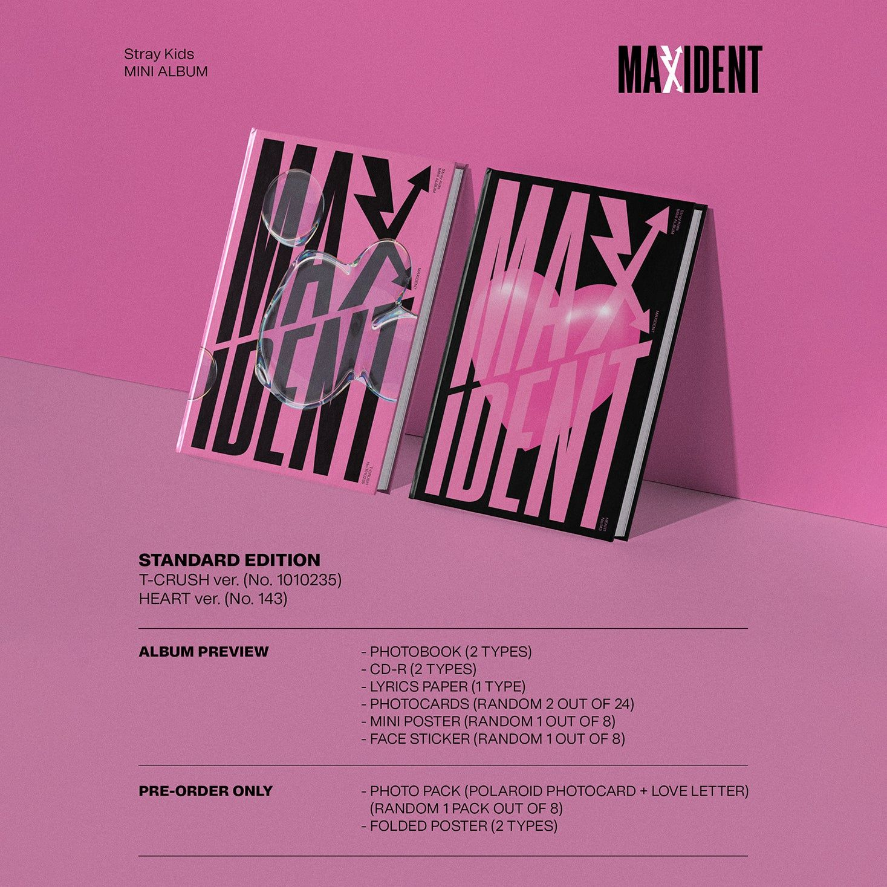
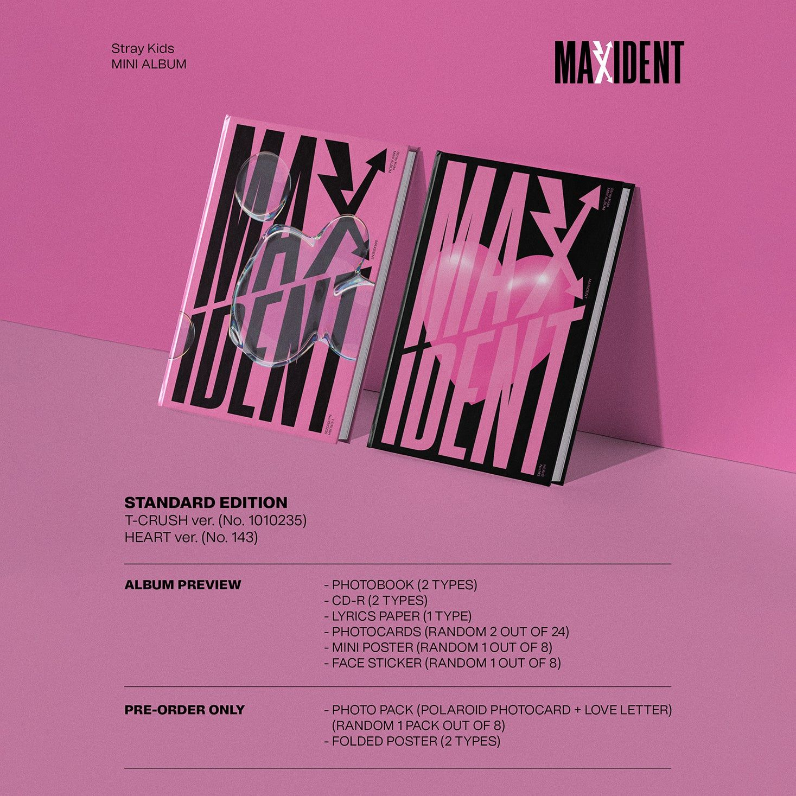

Historia
Pre-Debut:
El 4 de agosto de 2017, anunció que JYP Entertainment planeaba realizar un nuevo programa de televisión, que daría como resultado la formación de un nuevo grupo de chicos. El 21 de septiembre, se reveló que el programa de llamaría Stray Kids. Fue el primer programa de este tipo desde que Twice se formó mediante Sixteen en 2015 por la misma compañía. Sin embargo, el concepto de Stray Kids era bastante diferente y proporcionó un formato de "aprendices contra JYP". El programa se transmitió en el canal Mnet TV del 17 de octubre al 19 de diciembre, concursaron nueve aprendices de JYP: Bang Chan, Kim Woo-jin, Lee Min-ho, Seo Chang-bin, Hwang Hyun-jin, Han Ji-sung, Lee Felix, Kim Seung-min y Yang Jeong-in, algunos de los cuales en la final formarían parte del grupo.
El 6 de octubre, antes de la transmisión del programa, se lanzó un videoclip de la canción "Hellevator", donde aparecieron los competidores del programa. La canción en sí fue creada por el equipo de 3RACHA. Durante el programa, evaluando los talentos y habilidades del aprendiz, el jurado en el cuarto episodio eliminó a Minho del concurso, y en el octavo a Felix. Sin embargo, gracias a la decisión J.Y. Park, se les dio la oportunidad de regresar nuevamente, en el décimo episodio de Stray Kids. Durante este episodio, gracias al voto de la audiencia y la decisión final de J.Y. Park, Minho y Felix se unieron al grupo Stray Kids, que por lo tanto tenía nueve miembros.
Historia
Debut:
Junto con la apertura de la página web oficial de Stray Kids, JYP Entertainment anunció el lanzamiento del miniálbum de predebut Mixtape. Constaba de siete canciones, todas ellas creadas por los propios miembros. Mixtape y el dance practice de "Grrr" se publicaron el 8 de enero de 2018, mientras que el vídeo con la coreografía de "Young Wings" se publicó una semana después. Mixtape debutó en el segundo puesto de Gaon Album Chart y World Albums Chart.
El 30 de marzo, se publicó el vídeo "Grow Up". El 1 de agosto, se anunció el nombre oficial del fandom, Stay. El 6 de agosto, regresaron con su segundo miniálbum I Am Who. El videoclip de "My Pace" alcanzó más de 7 millones de visitas en las primeras 24 horas, siendo el mejor resultado de Stray Kids y también lo convirtió en ese momento en el décimo séptimo vídeo más visto en 24 horas entre todos los artistas coreanos. El 22 de octubre, el grupo regresó con su tercer miniálbum, I Am You.
Stray Kids lanzó un sencillo digital titulado "Double Knot" el 9 de octubre de 2019, y también anunció que su gira, District 9 Unlock World Tour, comenzaría el 23 y 24 de noviembre en el Olympic Hall de Seúl, además del lanzamiento de su nuevo miniálbum Clé: Levanter el 25 de noviembre. Sin embargo, el 28 de octubre, JYP anunció que Woojin había dejado el grupo debido a circunstancias personales, y como resultado se pospuso el lanzamiento del disco hasta el 9 de diciembre. El 13 de noviembre, Stray Kids publicó el vídeo musical del sencillo "Astronaut", el primer lanzamiento del grupo sin Woojin. El 26 de diciembre, se lanzó un sencillo digital titulado "Mixtape: Gone Days", el primer sencillo del proyecto Mixtape.

Integrantes
BANG CHAN
En 2010 realizó una audición para JYP Entertainment en Australia, y logrando ser aceptado, tuvo que trasladarse a Corea del Sur, donde fue aprendiz junto a integrantes de grupos como Day6, GOT7 Y TWICE, sin embargo ellos lograron debutar antes que él, Bang Chan llego a ser candidato para debutar en GOT7 sin embargo se terminó escogiendo a BamBam como último integrante por que él tenía más tiempo de ser aprendiz que Bang Chan.
En 2011 se presentó por primera vez como aprendiz de JYP Entertainment en un trainee showcase junto a Chaeyoung de TWICE y BamBam de GOT7.
El 18 de enero de 2017 debutó junto a Seo Chang Bin y Han Ji Sung con el alias CB97 en el trio de hip hop 3Racha y con el mixtape digital “J/2017/mixtape”. En agosto de 2017 se anunció que formaría parte del reality show de JYP Entertainment nombrado "Stray Kids". Bang Chan fue el encargado de seleccionar a los aprendices para formar al grupo masculino.
Bang Chan es integrante de la sub-unidad de hip hop 3Racha e integrante del grupo Stray kids, grupo formado a través del reality show musical "Stray Kids".
Bang Chan debutó en 3Racha el 18 de enero de 2017 con el mixtape digital “J/2017/mixtape”; y en Stray Kids el 25 de Marzo de 2018 con el primer mini álbum "I Am NOT" bajo la representación discográfica de JYP Entertainment en Corea del Sur.
Bang Chan mantiene las posiciones oficiales de líder, vocalista principal, rapero y bailarín.
DATOS CURIOSOS
* Tiene conocimientos sobre 4 idiomas: ingles (lengua materna), coreano (fluido), japonés (intermedio) y chino (básico).
* Tiene una hermana menor, llamada Hannah, y un hermano menor, llamado Lucas.
* Cuando estaba en Australia, vivió en 5 disturbios de New South Wales (estado al suroeste de Australia): Strathfield, Drummoyne, Enfield, Belmore, Greenacre.
* Tiene un perro de mascota de la raza Cavalier King Charles Spaniel, llamado Berry.
* En 2015 realizó dos cameos en MVs de otros grupos, uno como zombie en el MV "Like ooh Ah" de TWICE y otro en el MV "Only You" de Miss A.
* Si no fuera cantante, le hubiera gustado ser actor o atleta.
* Aprendió a bailar ballet y danza contemporánea.
* Ha ayudado a producir la mayoría de canciones de 3Racha y Stray Kids.
Integrantes
LEE KNOW
Lee Min Ho es integrante del grupo de kpop masculino "Stray kids", grupo formado a través del reality show musical "Stray Kids".
Lee Know empezó a bailar y descubrir su pasión por el baile cuando estaba en Escuela Secundaría. Posteriormente, se convirtió en bailarín de respaldo de BTS, en 2016 estuvo en el cover Rainism de Rain hecho por BTS , en 2017 en la gira “BTS Live Trilogy Episodio III: The Wings Tour” en Japón y también en 2017 fue bailarín de respaldo del MV “Not Today”. Ser bailarín de respaldo lo hizo darse cuenta que quería convertirse en idol porque quería ser la estrella en el escenario y si no era posible quería seguir siendo bailarín.
En 2016 audicionó para JYP Entertainment con la canción “Thought of You” de John Park. En Agosto de 2017 fue seleccionado para formar parte del grupo de chicos para el reality show "Stray Kids". En Octubre se transmitió el primer episodio y se anunció al grupo masculino como ganador para realizar una serie de misiones sin fallar y destacar sus habilidades con el objetivo de evitar ser eliminados y finalmente poder debutar.
El 25 de Marzo de 2018, Lee Know debutó en Stray Kids con la canción “District 9” en el programa "MCountdown de Mnet", “District 9” es la canción principal de su primer mini álbum "I Am NOT".
Lee Min Ho mantiene las posiciones oficiales de vocalista, rapero y bailarín principal.
DATOS CURIOSOS
* Estudió en: Gimpo Jeil Technical High School.
* Tiene conocimientos sobre 3 idiomas: coreano (lengua materna), inglés (intermedio) y japonés (básico).
* Es ambidiestro.
* Es hijo único.
* No sabe nadar.
* Tiene tres gatos de mascota, llamados: Soon-ie, Doong-ie y Dori.
* Lee Know fue quien creó la coreografía para la canción pre-debut de grupo “Hellevator”.
* En 2018 fue modelo para un anuncio de la marca Ceci Korea junto a Hyujin.
* Lee Know es el integrante de Stray Kids con menor tiempo de entrenamiento.
* Lee Know, Hyunjin y Felix son considerados como la visual line de Stray Kids.
Integrantes
CHANGBIN
Changbin es integrante de la sub-unidad de hip hop 3Racha e integrante del grupo "Stray kids", grupo formado a través del reality show musical "Stray Kids".
Según información de Korea Music Copyright Association, Changbin ha compuesto más de 100 canciones.
Changbin tenía el sueño de convertirse en artista desde que bailó y rapeó en un festival de su escuela y la reacción del público se le hizo imposible de olvidar. Así que estudió en la MU Doctor Dance Vocal Academy rap, canto y baile antes de audicionar para JYP Entertainment.
El 18 de enero de 2017, Changbin debutó junto a Bang Chan y Han Ji Sung, con el alias SPEARB, en el trio de hip hop 3Racha con el mixtape digital “J/2017/mixtape”. Posteriormente fue seleccionado para ser parte del grupo de chicos en el reality show de JYP Entertainment, nombrado "Stray Kids". Donde presentó un gran desempeño, logrando cumplir con las misiones y llegar a la final sin ser eliminado.
Con el grupo formado y confirmado para debutar, el 08 de de Enero de 2018, Stray Kids lanza su álbum pre-debut “Hellevator”, con las 7 canciones presentadas durante el reality show, tituladas: “Hellevator”, “Grrr”, “Young Wings”, “YAYAYA”, “GLOW”, “School Life” y “4419”.
Changbin mantiene las posiciones oficiales de rapero principal, vocalista y bailarín.
DATOS CURIOSOS
* Estudió en: Bora High School y MU Doctor Academy (academia de baile y rap).
* Puede tocar el violín.
* Fue cinturón negro en Taekwondo, empezó cuando tenía alrededor de seis años.
* Era un muy bueno en matemáticas y logró ganar el primer premio en una competencia de matemáticas de joven.
* Si no fuera integrante de Stray Kids, sería productor, compositor o tatuador.
* Ha ayudado a producir las canciones de Stray Kids.
* Changbin fue quien propuso el nombre de la canción “Hellevator”, como la unión de Hell (infierno) y elevator (elevador).
* Changbin tiene mas de 100 canciones bajo su nombre.
* Junto con Bang Chan y Han ocupan los primeros 3 lugares de los idols de la 4th gen con mas canciones escritas y producidas a su nombre.

Integrantes
HYUNJIN
Hwang Hyun Jin es integrante del grupo de kpop masculino "Stray kids", grupo formado a través del reality show musical "Stray Kids".
De niño participó en muchos concursos por curiosidad y se dio cuenta que estar en el escenario lo hacía muy feliz y además, estaba muy interesado en la música por lo que quiso convertirse en idol.
En 2015 fue reclutado por el personal de JYP Entertainment en la calle y el mismo año se volvió aprendiz de la compañía. A mediados de 2017 fue seleccionado para formar parte del grupo de chicos en el reality show "Stray Kids". En Octubre se transmitió el primer episodio y se anunció al grupo masculino como ganador para realizar una serie de misiones sin fallar y destacar sus habilidades con el objetivo de evitar ser eliminados y finalmente poder debutar.
Hyunjin obtuvo un gran desempeño y logró completar las misiones sin ser eliminado, y se decidió que los 9 participantes debutarían en el grupo (actualmente 8, tras la salida de Woojin). Con el grupo formado y confirmado para debutar, el 08 de de Enero de 2018, Stray Kids lanza su álbum pre-debut “Hellevator”, con las 7 canciones presentadas durante el reality show, tituladas: “Hellevator”, “Grrr”, “Young Wings”, “YAYAYA”, “GLOW”, “School Life” y “4419”.
El 25 de Marzo de 2018, Hyunjin debutó en Stray Kids con la canción “District 9” en el programa "MCountdown de Mnet", “District 9” es la canción principal de su primer mini álbum "I Am NOT".
Hwang Hyun Jin mantiene las posiciones oficiales de rapero principal, vocalista, visual y bailarín principal.

DATOS CURIOSOS
* Estudió en: Sungil Elementary School, Seongae Middle School, Tohoku High School y Seoul Performing Arts High School (SOPA), Practical Dance Department.
* Se graduó de SOPA en febrero de 2019.
* En SOPA fue compañero de clases de Chanyoung de D-CRUNCH y Yongseung de VERIVERY.
* Tiene conocimientos sobre 2 idiomas: coreano (lengua materna) e inglés (intermedio).
* Es hijo único.
* Tiene un perro de mascota, llamado: Kkami.
* Durante la Escuela primaria quería ser jugador de futbol cuando fuera mayor.
* En 2018 fue modelo para un anuncio de la marca Ceci Korea junto a Lee Know.
* Los accesorios que nunca le faltan son anillo y collar.
* Si no fuera integrante de Stray Kids, le hubiera gustado ser diseñador de interiores.

Integrantes
HAN
Han Ji Sung es integrante de la sub-unidad de hip hop 3Racha e integrante del grupo "Stray kids", grupo formado a través del reality show musical "Stray Kids".
Han nació en Incheon, Corea del Sur sin embargo desde pequeño se mudó a Malasia, donde creció la mayor parte de su infancia y adolescencia, durante 6 años. Han tenía el sueño de convertirse en cantante porque pensaba que contar tu historia a través de la música era genial.
Estando en Corea del Sur, se unió a la D.E.F Academy para aprender a rapear y bailar. Luego, un día realizó una audición para una compañía y de repente supo que JYP Entertainment estaba realizando audiciones para reclutar nuevos aprendices, pero él no estaba convencido de ir debido a que no creía ser aceptado pero un amigo lo convenció de realizarla, diciéndole que tal vez se podían encontrar con una celebridad al menos. Y afortunadamente, logró unirse a la compañía.
El 18 de enero de 2017, Han debutó junto a Bang Chan y Changbin, con el alias J.ONE, en el trio de hip hop 3Racha con el mixtape digital “J/2017/mixtape”. Y a mediados de 2017, fue seleccionado para ser parte del grupo de chicos en el reality show de JYP Entertainment, nombrado "Stray Kids". Durante el programa obtuvo elogios y muy buenas criticas por parte de los jueces y logró terminar las misiones con éxito.
Se decidió que el grupo debutaría con los 9 participantes (actualmente 8, tras la salida de Woojin), y con el grupo formado y confirmado para debutar, el 08 de de Enero de 2018, Stray Kids lanza su álbum pre-debut “Hellevator”, con las 7 canciones presentadas durante el reality show, tituladas: “Hellevator”, “Grrr”, “Young Wings”, “YAYAYA”, “GLOW”, “School Life” y “4419”.
Han Ji Sung mantiene las posiciones oficiales de rapero principal, vocalista principal y bailarín.
DATOS CURIOSOS
* Estudió en: R.E.A.L International School (Malasia) y D.E.F Academy (Corea del Sur).
* En 2019, Han participó en la composición de la canción "我的世代 (My Era)" y "No Joke" del primer álbum del cantante taiwanes Show Luo.
* Puede hablar 3 idiomas: coreano (lengua materna), inglés (fluido) y malayo (básico).
* Tiene un hermano mayor.
* Sabe tocar la guitarra y el piano.
* Personalidad: brillante, positivo y seguro.
* Si no fuera integrante de Stray Kids, sería productor.
* Mantiene participación en la producción de las canciones de Stray Kids

Integrantes
FELIX
Lee Felix (Lee Yong Bok es Corea) es integrante del grupo de kpop masculino "Stray kids", grupo formado a través del reality show musical "Stray Kids".
Felix quería convertirse en cantante porque le gustaba mucho la música. Y en Febrero de 2017 lo logró, convirtiéndose en aprendiz de JYP Entertainment.
A mediados de 2017 fue seleccionado para formar parte del grupo de chicos en el reality show "Stray Kids". En Octubre se transmitió el primer episodio y se anunció al grupo masculino como ganador para realizar una serie de misiones sin fallar y destacar sus habilidades con el objetivo de evitar ser eliminados y finalmente poder debutar.
Felix realizó un gran esfuerzo y trabajó muy duro durante las misiones; desafortunadamente durante la 4ª misión, Felix fue eliminado por haberse equivocado en la coreografía y por problemas de vocalización en su rap. No obstante, JYP Entertainment decidió darle a Felix y a su compañero anteriormente eliminado, Lee Know (Minho), una segunda oportunidad para demostrar que estaban preparados para debutar.
Los chicos lograron un gran desempeño en la 5ª y última misión, por lo que la compañía decidió que los 9 participantes debutarían en un sólo grupo (actualmente 8, tras la salida de Woojin). Con el grupo formado y confirmado para debutar, el 08 de de Enero de 2018, Stray Kids lanza su álbum pre-debut “Hellevator”, con las 7 canciones presentadas durante el reality show, tituladas: “Hellevator”, “Grrr”, “Young Wings”, “YAYAYA”, “GLOW”, “School Life” y “4419”.
El 25 de Marzo de 2018, Felix debutó en Stray Kids con la canción “District 9” en el programa "MCountdown de Mnet", “District 9” es la canción principal de su primer mini álbum "I Am NOT".
Lee Felix mantiene las posiciones oficiales de rapero principal, vocalista y bailarín principal.
DATOS CURIOSOS
* Estudió en: St. Patrick's Marist College.
* Nació en Sídney, Australia pero sus padres son coreanos.
* Tiene un tono de voz bajo (voz profunda y suave), aunque tambien maneja voz aguda a la perfeccion.
* Tiene conocimientos sobre 3 idiomas: inglés (lengua materna), coreano (intermedio) y francés (básico).
* Es muy bueno en taekwondo, tiene cinturón negro de tercer grado y ha ganado muchos premios.
* Sabe tocar el piano.
* Considera que su punto encantador son sus pecas.
* Si no fuera integrante de Stray Kids, le gustaría ser compositor.
* Es patrocinador de la asociación Save The Children para ayudar a defender los derechos de la niñez. Tiene una funda roja de teléfono con la frase “Love Is Everithing To Me” de la asociación.
Integrantes
SEUNGMIN
Kim Seung Min es integrante del grupo de kpop masculino "Stray kids", grupo formado a través del reality show musical "Stray Kids".
Seungmin tenía el sueño de convertirse en cantante porque disfrutaba estar en el escenario y quería mostrar su imagen de cantante a muchas personas. Entonces se volvió aprendiz de la compañía Plan A Entertainment. Luego, en febrero de 2016 participó en la 13ª audición abierta de JYP Entertainment, logró quedar en Segundo lugar y en 2017 se convirtió en aprendiz de JYP Ent.
A mediados de 2017 fue seleccionado para formar parte del grupo de chicos en el reality show "Stray Kids". En Octubre se transmitió el primer episodio y se anunció al grupo masculino como ganador para realizar una serie de misiones sin fallar y destacar sus habilidades con el objetivo e evitar ser eliminados y finalmente poder debutar.
Seungmin demostró un gran desempeño durante el reality show y logró completar todas las misiones sin ser eliminado. En el último capítulo, JYP Entertainment decidió debutar a los 9 participantes en un sólo grupo (actualmente 8, tras la salida de Woojin).
Con el grupo formado y confirmado para debutar, el 08 de de Enero de 2018, Stray Kids lanza su álbum pre-debut “Hellevator”, con las 7 canciones presentadas durante el reality show, tituladas: “Hellevator”, “Grrr”, “Young Wings”, “YAYAYA”, “GLOW”, “School Life” y “4419”.
Kim Seung Min mantiene las posiciones oficiales de vocalista principal y bailarín.
DATOS CURIOSOS
* Estudió en: Cheongdam High School y M Academy.
* Puede hablar 2 idiomas: coreano (lengua materna) e inglés (fluido).
* Soñaba con convertirse en jugador de béisbol.
* Si no hubiera sido idol, le gustaría haber sido fotógrafo o fiscal.
* Es el integrante más organizado/ordenado de Stray Kids.
* Pasatiempos favoritos: escuchar música, comer, tomar fotos, escribir en su diario y caminar por la noche mientras escucha música.
* En 2018 fue MC del programa de televisión “After School Club”.
* Su estación del año favorita es el otoño.
* Deportes favoritos: béisbol y el baloncesto.
* Artistas favoritos: Shawn Mendes y DAY6.
Integrantes
I.N
Yang Jeong In es integrante del grupo de kpop masculino "Stray kids", grupo formado a través del reality show musical "Stray Kids".
I.N (Jeongin es su nombre real) desde pequeño estaba involucrado en la industria del entretenimiento debido a que se convirtió en modelo infantil a los 7 años.
En 2016 se convirtió en aprendiz de JYP Entertainment y a mediados de 2017 fue seleccionado para formar parte del grupo de chicos en el reality show "Stray Kids". En Octubre se transmitió el primer episodio y se anunció al grupo masculino como ganador para realizar una serie de misiones sin fallar y destacar sus habilidades con el objetivo de evitar ser eliminados y finalmente poder debutar.
I.N, a pesar de los obstáculos, se esforzó y trabajó muy duro para completar las misiones, y gracias a sus habilidades logró completar el programa sin ser eliminado. Durante el último capitulo, JYP Entertainment decidió debutar a los 9 participantes en un sólo grupo (actualmente 8, tras la salida de Woojin).
Una vez formado el grupo y confirmado para debutar, el 08 de de Enero de 2018, Stray Kids lanza su álbum pre-debut “Hellevator”, con las 7 canciones presentadas durante el reality show, tituladas: “Hellevator”, “Grrr”, “Young Wings”, “YAYAYA”, “GLOW”, “School Life” y “4419”.
Yang Jeong In mantiene las posiciones oficiales de vocalista, maknae y bailarín.

DATOS CURIOSOS
* Estudió Música Aplicada en Seoul Performing Arts High School (SOPA).
* Tiene conocimientos sobre 2 idiomas: coreano (lengua materna) e inglés (básico).
* Si no fuera idol, le hubiera gustado ser maestro de primaria.
* La palabra Fox (zorro) de sus apodos viene por la forma característica de sus ojos.
* En 2019 realizó un cameo para la serie A-TEEN 2 de Naver.
* Mejoró sus habilidades de baile durante su participación en Kingdom.
* Pasatiempos favoritos: escuchar videos de ASMR, escuchar música de rock y pop, y ver videos de Mukbang.
* Artista favorito: Charlie Puth.
* Su modelo a seguir es Bruno Mars.
* Es el MAKNAE del grupo (Menor).
Discografia
ALBUMES
Mixtape
Mixtape es un extended play pre-debut del grupo surcoreano Stray Kids. El EP fue lanzado digital y físicamente el 8 de enero de 2018 por JYP Entertainment y distribuido a través de Genie Music. Consiste de siete canciones, todas las cuales se presentaron en su reality show.
Lista de canciones:
| Título | Duración |
|---|---|
| «Hellevator» | 4:01 |
| «Beware» (Grrr 총량의 법칙) | 3:09 |
| «Spread My Wings» (어린 날개) | 3:18 |
| «Yayaya» | 3:21 |
| «Glow» | 3:24 |
| «School Life» | 3:36 |
| «4419» | 3:13 |
I AM NOT
I Am Not (estilizado como I am NOT) es el extended play (EP) debut del grupo surcoreano Stray Kids. El álbum fue lanzado digital y físicamente el 26 de marzo del 2018 por JYP Entertainment. Una presentación de debut titulada Stray Kids Unveil: Op. 01: I Am Not se llevó a cabo el día anterior. El álbum vendió 54,733 copias físicas en marzo del mismo año.
El álbum físico fue lanzado en dos versiones. Una versión "I am" y otra "NOT".
Lista de canciones:
| Título | Duración |
|---|---|
| «NOT!» | 1:22 |
| «District 9» | 3:31 |
| «Mirror» | 3:40 |
| «Awaken» | 3:13 |
| «Rock» (돌) | 3:13 |
| «Grow Up» (잘 하고 있어) | 3:30 |
| «3rd Eye» | 4:03 |

I AM WHO
I Am Who (estilizado como I am WHO) es el segundo extended play (EP) del grupo surcoreano Stray Kids. El EP fue lanzado física y digitalmente el 6 de agosto del 2018 por JYP Entertainment. Una presentación titulada Stray Kids Unveil: Op. 02: I Am Who se llevó a cabo el día anterior. El álbum vendió un total de 79,684 copias físicas en el mes de agosto del mismo año.
El álbum fue lanzado en dos versiones. Una versión “I am” y la otra, "WHO".
Lista de canciones:
| Título | Duración |
|---|---|
| «WHO?» | 1:44 |
| «My Pace» | 3:09 |
| «Voices» | 3:20 |
| «Question» | 3:02 |
| «Insomnia» (불면증) | 3:26 |
| «M.I.A.» | 3:30 |
| «Awkward Silence» (갑자기 분위기 싸해질 필요 없잖아요) | 3:13 |
I AM YOU
I Am You (estilizado como I am YOU) es el tercer extended play (EP) del grupo surcoreano Stray Kids. El EP fue lanzado física y digitalmente el 22 de octubre del 2018 por JYP Entertainment y fue distribuido mediante Iriver. Una presentación titulada Stray Kids Unveil: Op. 03: I Am You se llevó a cabo en Olympic Hall un día antes del lanzamiento. El álbum vendió un total de 76,547 copias físicas en octubre del mismo año.
El álbum fue lanzado en dos versiones. Una versión “I am” y la otra, "YOU".
Lista de canciones:
| Título | Duración |
|---|---|
| «YOU.» | 1:19 |
| «I Am You» | 3:25 |
| «My Side» (편) | 3:37 |
| «Hero's Soup» (해장국) | 3:33 |
| «Get Cool» | 3:15 |
| «N/S» (극과 극) | 3:45 |
| «0325» | 3:39 |
| «Mixtape #3» | 4:20 |

Clé 1: Miroh
Clé 1: Miroh (estilizado como Clé 1 : MIROH) es el cuarto extended play (EP) del grupo surcoreano Stray Kids. El EP fue lanzado física y digitalmente el 25 de marzo de 2019 por JYP Entertainment y distribuido mediante Iriver. El lanzamiento del EP estaba en conjunción con el primer aniversario del grupo.
Con el sencillo del EP, "Miroh", Stray Kids consiguen su primer premio en el programa musical M Countdown.
Para promocionar el lanzamiento del EP, JYP Entertainment anunció el 7 de marzo de 2019 que Stray Kids haría una gira alrededor de Corea del Sur titulada "Hi-Stay Tour in Korea". El grupo visitó Busan, Daejeon e Incheon antes del lanzamiento y continuaron con un evento especial en Seoul el 4 de abril.
Lista de canciones:
| Título | Duración |
|---|---|
| «Entrance» | 1:38 |
| «Miroh» | 3:27 |
| «Victory Song» (승전가) | 3:16 |
| «Maze of Memories» (잠깐의 고요) | 2:55 |
| «Boxer» | 3:20 |
| «Chronosaurus» | 3:18 |
| «19» | 3:25 |
| «Mixtape #4» | 3:51 |


Clé 2: Yellow Wood
Clé 2: Yellow Wood (estilizado como Clé 2 : Yellow Wood) es el primer álbum especial y el quinto extended play (EP) del grupo surcoreano Stray Kids. Fue lanzado física y digitalmente el 19 de junio de 2019 por JYP Entertainment y distribuido mediante Dreamus. El álbum consiste de tres nuevas canciones incluyendo el sencillo "부작용 (Side Effects)" y los cuatro "Mixtape" anteriormente disponibles mediante la versión física de los cuatro anteriores EPs. Este es el último lanzamiento junto al exmiembro Woojin luego de su partida a finales de octubre de 2019, poco antes del lanzamiento del sexto extended play Clé: Levanter.
Lista de canciones:
| Título | Duración |
|---|---|
| «Road Not Taken» (밟힌 적 없는 길) | 1:36 |
| «Side Effects» (부작용) | 3:14 |
| «TMT» (별생각) | 3:27 |
| «Mixtape #1» | 4:13 |
| «Mixtape #2» | 4:52 |
| «Mixtape #3» | 4:18 | «Mixtape #4» | 3:51 |

Clé: Levanter
Clé: Levanter (estilizado como Clé : LEVANTER) es el sexto extended play (EP) del grupo surcoreano Stray Kids. Fue lanzado el 9 de diciembre de 2019 por JYP Entertainment y distribuido a través de Dreamus. El EP contiene tres sencillos. El sencillo principal, "Double Knot", fue lanzado el 9 de octubre de 2019 seguido por "Astronaut" el 14 de noviembre y finalmente el title track "Levanter", lanzado el mismo día que el extended play.
El EP estaba originalmente programado para ser lanzado el 25 de noviembre de 2019, pero se retrasó hasta el 9 de diciembre de 2019 debido a la salida del exmiembro Woojin el 27 de octubre de 2019. La partida de Woojin resultó en que el grupo tuviera que regrabar las canciones.
Clé: Levanter fue exitoso en cuanto a ventas, debutando en la cima del Gaon Album Chart y encabezando la lista por dos semanas consecutivas. El EP se volvió el segundo álbum más vendido en la edición de diciembre del Gaon Monthly Album Chart con 182,300 copias vendidas. El EP también se ubicó en el puesto 30 del Gaon Year-End Album Chart de 2019, volviéndose el álbum más vendido del grupo en 2019.
Lista de canciones:
| Título | Duración |
|---|---|
| «Stop» | 3:10 |
| «Double Knot» | 3:10 |
| «Levanter» (바람) | 3:16 |
| «Booster» | 3:41 |
| «Astronaut» | 2:59 |
| «Sunshine» | 3:42 | «You Can Stay» | 3:28 | «Mixtape #5» | 3:54 |
GO LIVE
Go Live (en hangul, GO生; romanización revisada del coreano, Gosaeng) es el álbum de estudio debut del grupo surcoreano Stray Kids. Fue lanzado por JYP Entertainment el 17 de junio de 2020 y distribuido a través de Dreamus. El sencillo principal ,"God's Menu" (en hangul, 神메뉴), fue lanzado el mismo día. La reedición del álbum, In Life (en hangul, IN生; romanización revisada del coreano, Insaeng) fue lanzado el 14 de septiembre de 2020, junto a ocho nuevas canciones y el sencillo principal "Back Door".
Go Live debutó en la cima de la lista semanal de Gaon Album Chart, y también en el número cinco en la lista mensual con 243,462 copias vendidas, convirtiéndose en el álbum más vendido de Stray Kids. En agosto de 2020, el álbum recibió una certificación de Gaon Chart como álbum de ventas platino (vendió más de 250,000 copias), convirtiéndose en el primer álbum del grupo en lograrlo.
El sencillo "God's Menu" debutó en el número 144 en la lista de descargas semanales de Gaon, se convirtió en el primer sencillo del grupo en aparecer en la lista, y también en su primer sencillo en aparecer en una categoría principal de la lista digital de Gaon (Digital, Descarga y Streaming). En la actualidad su MV tiene el record de ser el MV de la 4th generacion con mas vistas (390 Millones de vistas, Abril 2023).
Lista de canciones:
| Título | Duración |
|---|---|
| «Go Live» (GO生) | 1:51 |
| «God's Menu» (神메뉴) | 2:48 |
| «Easy» | 3:03 |
| «Pacemaker» | 3:11 |
| «Airplane» (비행기) | 3:35 |
| «Another Day» (일상) | 2:47 | «Phobia» | 3:33 | «Blueprint» (청사진) | 4:11 | «Ta» (타) | 3:29 | «Haven» | 3:20 | «Top» (Tower of God OP) | 3:06 | «Slump» (Tower of God ED) | 2:12 | «Mixtape: Gone Days» | 3:15 | «Mixtape: On Track» (바보라도 알아) | 3:28 |
IN LIFE
La reedición del álbum Go Live llamado "In Life" (en hangul, IN生; romanización revisada del coreano, Insaeng) fue lanzado el 14 de septiembre de 2020, junto a ocho nuevas canciones adicionales a las que contenia Go Live y el sencillo principal "Back Door".
El MV del sencillo "Back Door" tiene el record de ser el segundo MV de la 4th generacion con mas vistas (304 Millones de vistas, Abril 2023).
Lista de canciones:
| Título | Duración |
|---|---|
| The Tortoise and the Hare» (토끼와 거북이) | 3:44 |
| «Back Door» | 3:09 |
| «B Me» | 3:25 |
| «Any» (아니) | 2:49 |
| «Ex» (미친 놈) | 3:37 |
| «We Go» (Bang Chan, Changbin, Han) | 2:38 |
| «Wow» (Lee Know, Hyunjin, Felix) | 3:14 |
| «My Universe» (Seungmin, I.N con Changbin) | 3:23 |
| «God's Menu» (神메뉴) | 2:48 |
| «Easy» | 3:03 |
| «Pacemaker» | 3:11 |
| «Airplane» (비행기) | 3:35 |
| «Another Day» (일상) | 2:47 | «Phobia» | 3:33 | «Blueprint» (청사진) | 4:11 | «Ta» (타) | 3:29 | «Haven» | 3:20 |

ALL IN
All In (estilizado en mayúsculas ) es el primer juego extendido japonés (octavo en general) del grupo de chicos de Corea del Sur Stray Kids . Fue lanzado el 27 de octubre de 2020 digitalmente y el 4 de noviembre físicamente. El sencillo principal "All In" fue lanzado el 20 de octubre. Este EP también incluye las versiones japonesas de "God's Menu" y "Back Door" y el sencillo anterior, " Top ".
Lista de canciones:
| Título | Duración |
|---|---|
| «All In» | 3:07 |
| «Fam» | 3:35 |
| «One Day» | 3:13 |
| «God's Menu (Japanese Version)» | 2:59 |
| «Back Door (Japanese Version)» | 3:11 |
| «Top (Japanese Version)» | 3:08 |
| «Slump (Japanese Version)» | 2:16 |
NOEASY
Noeasy (estilizado como NOEASY) es el segundo álbum de estudio del grupo surcoreano Stray Kids. Fue lanzado por JYP Entertainment y distribuido por Dreamus el 23 de agosto de 2021. El disco fue producido por el equipo de producción del grupo, 3Racha. El álbum incluye catorce canciones, incluyendo los sencillos «Thunderous», «Wolfgang» y «Mixtape: Oh», siendo estos dos últimos lanzados previamente.
El álbum tiene una duración de 46 minutos y 35 segundos y consta de catorce canciones. El álbum utiliza diferentes géneros, como hip hop, trap, R&B, EDM, pop y rock. Casi todas las canciones han sido escritas y compuestas por 3Racha, que consta de tres miembros del grupo: Bang Chan, Changbin y Han. Además de ellos, participaron en la producción los productores Versachoi, Krysta Youngs, HotSauce y Hong Ji-Sang, entre otros.
El MV del sencillo "Thunderous" tiene el record de ser el tercer MV de la 4th generacion con mas vistas (288 Millones de vistas, Abril 2023).
El 17 de agosto, se informó que los pedidos anticipados del álbum habían superado las 830 mil copias. Se preordenaron 300 mil copias de su predecesor, el álbum In 生 (In Life), por lo que el grupo rompió su récord anterior. El día en que se lanzó el álbum, se informó que los pedidos anticipados habían superado las 930 mil copias. El 31 de agosto, el álbum se convirtió en el álbum más vendido de JYP Entertainment, vendiendo más de 1.2 millones de copias.
Lista de canciones:
| Título | Duración |
|---|---|
| «Cheese» | 3:02 |
| «Thunderous» (소리꾼) | 3:03 |
| «Domino» | 3:10 |
| «Ssick» | 3:10 |
| «The View» | 3:22 |
| «Sorry, I Love You» (좋아해서 미안) | 2:58 |
| «Silent Cry» | 3:30 |
| «Secret Secret» | 3:30 |
| «Star Lost» | 3:35 |
| «Red Lights» (강박; interpretada por Bang Chan, Hyunjin)/td> | 3:10 |
| «Surfin» (interpretada por Lee Know, Changbin, Felix) | 3:12 |
| «Gone Away» (좋아해서 미안) | 4:01 |
| «Wolfgang» | 3:11 |
| «Mixtape: Oh» | 3:33 |
Christmas EveL
Christmas EveL (pronunciado "Christmas Evil") es un álbum único de la boy band surcoreana Stray Kids. Fue lanzado el 29 de noviembre de 2021 a través de JYP Entertainment y distribuido por Dreamus , como parte del proyecto Season Song de la banda. Comercializado como un "sencillo especial de vacaciones", consta de cuatro pistas, incluidos los sencillos principales duales " Christmas EveL " y " Winter Falls ", con un tema de "Niño travieso de Navidad " y un sonido navideño, hip hop y pop. Comercialmente, el álbum sencillo debutó en la cima de la lista de álbumes de Gaon. Fue certificado triple platino por la Asociación de contenido musical de Corea (KMCA), vendió 750.000 copias y fue nominado a Álbum del año - 4.º trimestre en los 11.º Gaon Chart Music Awards.
Lista de canciones:
| Título | Duración |
|---|---|
| «Christmas EveL» | 2:59 |
| «24 to 25» | 3:37 |
| «Winter Falls» | 3:35 |
| «Domino (English version)» | 3:19 |


ODDINARY
Oddinary es el sexto Extended play (EP) en coreano (9 en total) del grupo surcoreano Stray Kids. JYP Entertainment y Republic Records la publicaron el 18 de marzo de 2022, siete meses después del lanzamiento del anterior álbum de estudio Noeasy (2021). El EP fue su primer lanzamiento bajo Republic Records después de firmar un contrato en febrero y su primer EP en casi dos años desde Clé: Levanter (2019). Una combinación de "odd" (extraño) y "ordinary" (ordinario), Oddinary representa a "todos los que tenemos algo extraño en nosotros mismos" y el concepto de que "las cosas extrañas pronto serán ordinarias".
Comercialmente, Oddinary encabezó las listas musicales de Corea del Sur, Finlandia, Polonia y Estados Unidos y entró en el top 10 en Austria, Bélgica, Dinamarca, Japón, Lituania, Suecia y Suiza. Fue la primera aparición de Stray Kids en el Billboard 200 de Estados Unidos y en UK Official Albums Chart, entre otros. El EP ha vendido más de 1,5 millones de copias, convirtiéndose en el álbum más vendido del grupo y en su segundo álbum con un millón de ventas después de Noeasy. Para promocionar Oddinary, Stray Kids organizará su gira musical 2nd World Tour "Maniac", que comenzará el 29 de abril de 2022.
El MV del sencillo "MANIAC" tiene el record de ser uno de los MVS de la 4th generacion con mas vistas en el 2022.
Oddinary tiene una duración de veintidós minutos y tres segundos, y cuenta con siete canciones de varios géneros musicales de hip hop, trap, EDM, y rock. Todos las canciones fueron producidas y escritas principalmente por Bang Chan, Changbin y Han, que trabajan juntos como el equipo de producción interno conocido como 3Racha. Otros miembros también participaron en la composición de los temas. Lee Know, Seungmin e I.N coescribieron "Waiting for Us", mientras que Hyunjin y Felix coescribieron "Muddy Water".
Lista de canciones:
| Título | Duración |
|---|---|
| «Venom» (거미줄) | 3:15 |
| «Maniac» | 3:02 |
| «Charmer» | 3:08 |
| «Freeze» (땡)/td> | 2:58 |
| «Lonely St.» | 2:44 |
| «Waiting for Us» (피어난다; Bang Chan, Lee Know, Seungmin, I.N) | 3:39 |
| «Muddy Water» (Changbin, Hyunjin, Han, Felix) | 3:17 |
CIRCUS
Circus es el segundo EP en japonés ( décimo en general ) de la boy band surcoreana Stray Kids . Fue lanzado el 22 de junio de 2022 a través de Epic Records Japan . Centrado en un concepto de circo con elementos de hip hop , trap , rock y pop, el EP consta de seis temas, precedido por la versión japonesa de " Maniac ", " Your Eyes " y el tema principal . Comercialmente, Circus debutó en el número dos en la lista de álbumes de Oricon y en la cima de Billboard Japan Hot Albums, y fue certificado platino porRecording Industry Association of Japan (RIAJ), superando las 250.000 copias.
Lista de canciones:
| Título | Duración |
|---|---|
| «Circus» | 3:14 |
| «Fairytale» | 2:52 |
| «蜘蛛の巣 (Venom) -Japanese ver.-» | 3:15 |
| «Maniac -Japanese ver.-» | 3:05 |
| «Silent Cry -Japanese ver.-» | 3:31 |
| «Your Eyes» | 3:16 |
MAXIDENT
Maxident es el séptimo juego extendido en idioma coreano y el undécimo en general de la banda de chicos de Corea del Sur Stray Kids. Fue lanzado el 7 de octubre de 2022 a través de JYP Entertainment y Republic Records, siete meses después del lanzamiento de su anterior EP, Oddinary (2022). Una combinación de "máximo" o "máximo" e "incidente" o "accidente", el EP vio a la banda asumir un concepto de "amor" por primera vez. El álbum fue escrito y producido principalmente por 3Racha. Consta de ocho pistas, incluido el sencillo principal " Case 143 " y la versión coreana de " Circus ", originalmente del EP japonés de la banda del mismo nombre.
Los críticos musicales describieron el EP como un lanzamiento experimental, pero aún conservaron la identidad de Stray Kids. Comercialmente, Maxident encabezó las listas en Corea del Sur, Polonia y los Estados Unidos, y alcanzó los diez primeros en Australia, Bélgica, Dinamarca, Finlandia, Hungría, Japón, Lituania, Nueva Zelanda, Suecia y Suiza. El EP fue certificado como un vendedor de tres millones por la Asociación de contenido musical de Corea (KMCA), lo que lo convierte en uno de los álbumes más vendidos en Corea del Sur , y ganó el Álbum Bonsang en los 37th Golden Disc Awards y el Álbum del año. en el cuarto trimestre en los 12th Circle Chart Music Awards . Según la Federación Internacional de la Industria Fonográfica (IFPI),Maxident fue el sexto álbum más vendido a nivel mundial en 2022.
Lista de canciones:
| Título | Duración |
|---|---|
| «CASE 143» | 3:11 |
| «식혀 (CHILL)» | 3:15 |
| «Give Me Your TMI» | 3:18 |
| «SUPER BOARD» | 3:05 |
| «3RACHA (Bang Chan, Changbin, Han)» | 3:28 |
| «TASTE (Lee Know, Hyunjin, Felix)» | 3:36 |
| «나 너 좋아하나봐 (Can't Stop) (Seungmin, I.N)» | 3:29 |
| «CIRCUS (Korean Ver.)» | 3:14 |
 

SKZ-REPLAY
SKZ-Replay es el tercer álbum recopilatorio de la boy band surcoreana Stray Kids. Fue lanzado digitalmente el 21 de diciembre de 2022 a través de JYP Entertainment y Republic Records. El álbum consta de 25 pistas y se divide en dos lados: el lado A contiene diez canciones, ocho interpretadas en solitario y dos interpretadas por el grupo como un todo, y el lado B incluye quince canciones originales de su serie de videos SKZ- Player y Registro SKZ.
El 9 de noviembre, Stray Kids reveló los recuerdos para el reclutamiento oficial del club de fans de tercera generación, incluido un CD promocional para el álbum titulado SKZ-Replay. Afirmaron que el álbum se lanzaría digitalmente en diciembre de 2022 y constaría de una cara A y una cara B; el CD contendría solo canciones del lado A. Un mes después, el 14 de diciembre, se anunció formalmente el lanzamiento de SKZ-Replay el 21 de diciembre. La lista de canciones se reveló durante los siguientes dos días. Consta de 25 pistas, incluidas ocho pistas nuevas interpretadas como solos por cada miembro, además de las pistas publicadas anteriormente. El mismo día del lanzamiento del álbum también se subió un video musical que acompaña a la versión coreana de "Fam".
Lista de canciones:
| Título | Duración |
|---|---|
| «"Fam" (Korean version)» | 3:32 |
| «"Connected" (Bang Chan)» | 3:51 |
| «"Limbo" (나지막이; Lee Know)» | 3:17 |
| «"Doodle" (Changbin)» | 3:04 |
| «"Love Untold" (Hyunjin)» | 3:30 |
| «"Run"(Han)» | 2:58 |
| «"Deep End" (Felix)» | 3:28 |
| «"Stars and Raindrops" (내려요; Seungmin)» | 3:49 |
| «"Hug Me" (안아줄게요; I.N)» | 3:00 |
| «"#LoveStay"» | 3:17 |
| «"Zone" (Bang Chan, Changbin, Han)» | 3:32 |
| «"Close" (Han)» | 3:46 |
| «"Streetlight" (Changbin featuring Bang Chan)» | 3:09 |
| «"I Hate to Admit" (인정하기 싫어; Bang Chan)» | 2:50 |
| «"I Got It" (Han)» | 2:50 |
| «"Miss You" (꼬마별; Hyunjin)» | 3:08 |
| «"Maknae on Top" (막내온탑; I.N featuring Bang Chan, Changbin)» | 2:33 |
| «"Alien" (외계인; Han)» | 3:19 |
| «"Because" (좋으니까; Changbin, Felix)» | 3:18 |
| «"Piece of a Puzzle" (조각; Changbin, Seungmin)» | 2:53 |
| «"Wish You Back" (Han)» | 3:18 |
| «"Happy" (Han)» | 3:29 |
| «"Up All Night" (오늘 밤 나는 불을 켜; Bang Chan, Changbin, Felix, Seungmin)» | 3:21 |
| «"Drive" (Bang Chan, Lee Know)» | 2:44 |
| «"Ice.Cream" (Hyunjin)» | 2:50 |
THE SOUND
The Sound es el primer álbum de estudio en japonés y el tercero en general de la boy band surcoreana Stray Kids. Fue lanzado el 22 de febrero de 2023 a través de Epic Records Japan , ocho meses después de su segundo EP Circus en japonés(2022). Centrado en un tema de orquesta y el concepto musical único del grupo, el álbum consta de diez pistas, precedidas por " Scars ", las versiones japonesas de " Thunderous " y " Case 143 ", y la canción principal. The Sound debutó en la cima de Oricon Albums Chart por primera vez y Billboard Japan Hot Albums.
El álbum se abre con la canción principal "The Sound", que representa la confianza y la actitud del grupo hacia su música."Battle Ground" muestra "su entusiasmo y determinación para sobrevivir en el mundo de la música". "Lost Me" es una balada "desgarradora" sobre la soledad sin un ser querido. "DLMLU" significa "Don't Let Me Love You", expresando el sentimiento de "romper". "Novela" muestra la imaginación del "dulce amor en novela o drama" y "el sentimiento de enamorarse". La pista final "There" es "desgarradora" y "triste" balada sobre el fin del amor. Descrita por los miembros, es la segunda parte de la canción " Your Eyes" de su anterior EP Circus (2022).
Según Oricon , The Sound vendió 250.422 copias el 21 de febrero de 2023, una fecha de éxito y 378 000 copias en su primera semana, debutando en el número uno en la lista de álbumes semanales del 6 de marzo de 2023, superando las 132 000 copias del lanzamiento anterior Circus y convirtiéndose en su primer álbum número uno y las ventas físicas más altas en general en Japón. El álbum también debutó en la cima de la lista de álbumes combinados y la lista de álbumes mensual.
Lista de canciones:
| Título | Duración |
|---|---|
| «The Sound» | 3:00 |
| «Battle Ground» | 3:33 |
| «Lost Me» | 3:09 |
| «DLMLU» | 3:14 |
| «Novel» | 3:08 |
| «"Case 143" (Japanese version)» | 3:13 |
| «"Chill" (Japanese version)» | 3:18 |
| «Scars» | 3:19 |
| «"Thunderous" (Japanese version)» | 3:04 |
| «There» | 3:35 |
GALERIA


SKZ-CODE
SKZ-CODE es una serie de entretenimiento protagonizada por Stray Kids, la cual se caracteriza por tener todo tipo de temáticas, juegos, trivias, diversas actividades, vlogs, entre otras. Empezó su emisión en 2021 y al día de hoy (Abril, 2023) sigue al aire, contando con un total de 32 episodios.
Oprime AQUI para mirar los episodios de SKZ-CODE.
Galeria de imagenes de algunos episodios de SKZ-CODE


SKZ-REDES
Youtube:
Stray Kids
Stray Kids Japan Official YouTube
Instagram:
@Realstraykids
@straykids_official_jp
Twitter:
@Stray_kids
@Stray_kids_JP
Tik Tok:
@jypstraykids
@straykids_japan
Facebook:
Stray kids
Spotify:
Stray kids
FORMULARIO
Referencias bibliográficas
Stray Kids. Recuperado de: https://kpop.fandom.com/es/wiki/Stray_Kids
Bang Chan. Recuperado de: https://kpopfacts.com/bang-chan-integrante-de-stray-kids-biografia-y-datos-personales/
Lee Know. Recuperado de: https://kpopfacts.com/lee-know-integrante-de-stray-kids-biografia-y-datos-personales/
Changbin. Recuperado de: https://kpopfacts.com/changbin-integrante-de-stray-kids-biografia-y-datos-personales/
Hyunjin. Recuperado de: https://kpopfacts.com/hyunjin-integrante-de-stray-kids-biografia-y-datos-personales/
Han. Recuperado de: https://kpopfacts.com/han-integrante-de-stray-kids-biografia-y-datos-personales/
Felix. Recuperado de: https://kpopfacts.com/felix-integrante-de-stray-kids-biografia-y-datos-personales/
Seungmin. Recuperado de: https://kpopfacts.com/seungmin-integrante-de-stray-kids-biografia-y-datos-personales/
I.N. Recuperado de: https://kpopfacts.com/i-n-integrante-de-stray-kids-biografia-y-datos-personales/
Stray Kids discography. Recuperado de: https://en.wikipedia.org/wiki/Stray_Kids_discography